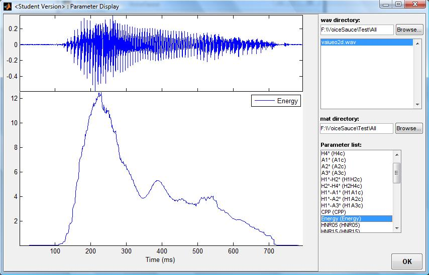
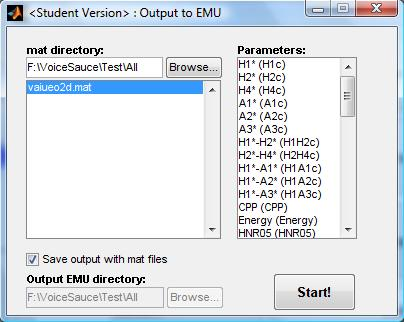

This section of the manual covers the three sections of VoiceSauce concerning data display and output - Parameter Display, Output to Text and Output to EMU. Parameter display allows the user to visually examine measured data for a single file at a time. Output to Text converts the measured data into a delimited text file, which can then be imported into spreadsheet manipulation software, such as MS Excel, for analysis. Output to EMU converts the measured data into a format that can be read by the EMU database program.
|
The Parameter Display window is reached by clicking on the appropriate button in the VoiceSauce home screen. This window has three main parts - a large display window on the left, data input fields in the upper right, and the parameter list in the lower right. If data has been analyzed using the Parameter Estimation section of VoiceSauce in the current session, the Parameter Display will open with this data pre-loaded. Otherwise, the display window will be blank. To load data, type the file path of the sound file directory in the field below .wav directory: or locate the directory by clicking the Browse... button. All sounds files in the specified directory will be listed in the box below the input field, and the waveform of the first sound file will display. By default, VoiceSauce will search for the .mat files containing the measured data in the same directory as the sound files. To specify a different directory, type the file path of the .mat file directory in the field below .mat directory or locate it by clicking the Browse... button. To view the measured data plotted on the same timescale as the waveform, select a parameter in the Parameter list:. Selecting a parameter will modify the display by reducing the size of the waveform and adding plot of the selected parameter below it. Many parameters can be displayed at once, but there can be only one y-axis. Therefore, if both F2, the frequency of the second formant, and H1*-H2*, the relative difference in amplitude of the first two harmonics, are selected, the plot will appear to be dominated by F2, as it is measured on a scale that varies between 1500 and 2500. H1*-H2* will be squished to the bottom because it is measured on a scale of around -10 to 10. To close the Parameter Display window, click the OK button. |
 |
|
The Output to Text window is reached by clicking the appropriate button in the VoiceSauce home screen. This window has two main sections - Parameters and Settings and Output Options. The first section contains all the options controlling the location of and which data to output. If data has been analyzed using the Parameter Estimation section of VoiceSauce in the current session, the Output to Text window will open with this data pre-loaded. Otherwise, the input directories will be blank. Measured data must be loaded into VoiceSauce before it can be converted to txt format. Type in the file path to the directory containing the .mat data files in the field to the right of Input .mat directory: or locate it by clicking on the Browse... button. Once the directory is loaded, all .mat files will be listed in the .mat files: box. VoiceSauce can also be instructed to look inside any subdirectories that may exist in the load directory by checking the Include subdirectories toggle. If sound files were analyzed using Praat TextGrid labeled segments, those files must also be loaded. When a .mat file directory is input, VoiceSauce automatically suggests this same directory as the directory containing the TextGrid files. If this is not the case, a separate directory must be input. Type in the file path to the directory containing the .TextGrid files in the field to the right of Input .TextGrid directory: or locate it by clicking on the Browse... button. Note that individual data points that happen to fall at the edge of a
TextGrid interval, where the label switches, are included in BOTH of the
adjacent TextGrid intervals. The data point is calculated twice, once with each
of the 2 labels. VoiceSauce can combine its measurements with Electroglottographic (EGG) data, if such recordings were made when the sound files were recorded, and if the signals were analyzed (outside VoiceSauce) using EggWorks. To instruct VoiceSauce to use the data from EggWorks's output .egg files, check the Include EGG data toggle and input the file path to the directory containing the EGG data in the EGG data directory: field. EggWorks output files can be from either the older standalone-EggWorks, or the newer AppsoBabble web version. VoiceSauce must be instructed where to save the resulting txt files. Type in the file path to the directory where the output .txt files should be stored in the field to the right of Output .txt directory: or locate it by clicking on the Browse... button. The final options in the center of the Parameters and Settings section affect the format of the final files. The Include TextGrid labels toggle controls whether or not the TextGrid label names will appear in the output txt files. (The separate Settings window lets the user specify TextGrid labels which should be ignored in the output - omitting labeled intervals which aren't needed, such as silent pauses, can greatly speed up processing.) The txt files will be formatted into rows and columns. Column delimiter: controls how the columns are separated. The default option is tab, but it may be set to comma or space instead. The Include algorithm metadata in output toggle gives the option of including information about which algorithms/settings were used in the various calculations. |
The subsection Segments controls whether all the data is output or whether the data is averaged together into chunks. No segments writes out all data, one measurement per interval specified by the Frame Shift parameter (which can be changed under Settings). If this option is selected, the output txt file will place each measurement on a separate row. For example, if a sound file segment is 100 ms long and the Frame Shift has been left at 1 ms, it will have 100 rows of corresponding data, but if the Frame Shift has been changed to 10 ms, then it will have 10 rows of corresponding data. Each measurement type, e.g. - F0, H1, etc., will be written in a separate column. Use sub-segments will average the data together into a number of chunks. Each sound file segment will be written to a single row, and each measurement type will be written in a separate column, but repeated for the number of sub-segments. No. of sub-segments: controls the number of chunks a sound file segment will be divided into. The No Segments option creates txt files that are very long; the Use Sub-Segments option creates txt files that are very wide.
Finally, the user must select which parameters to write to txt file. This is done in the Parameters: box to left of the window. This box lists all possible parameters. As the user clicks additional parameters, the No. of parameters selected: counter will increase.
The Output Options section controls the number of files that will be created. Users may select to write all data to a Single file or to Multiple files. If a single file is selected, users may enter the file path of the resulting txt file in the field below Output file: or locate it by selecting the Browse... button.
If multiple files are selected, users may enter the file path of each of the resulting txt file in the fields below Output files: or locate them by selecting the Browse... buttons. VoiceSauce organizes the data into groups:
Newer parameters may not have been assigned to any of these, and may be available only by the Single file option.
To tell VoiceSauce to begin the writing process, click Start! A message box will pop-up indicating the progress of the write. This window has two buttons: Stop and Close. When the write begins, the Close button will be grayed out. At any time, the write process can be stopped by clicking the Stop button. Once the write process is complete, or when it has been stopped, the Close button will become active. Click it to close the window and return to the Output to Text window.
|
The Output to EMU window is reached by clicking the appropriate button in the VoiceSauce home screen. This section of VoiceSauce functions like a simplified version of Output to Text. Users must direct VoiceSauce to the measured data that is to be converted into a format readable by EMU and select which measured parameters to write, but there are no options controlling TextGrid labels or dividing data into sub-sections. If data has been analyzed using the Parameter Estimation section of VoiceSauce in the current session, the Output to EMU window will open with this data pre-loaded. Otherwise, the input directory will be blank. Measured data must be loaded into VoiceSauce before it can be converted to EMU format. Type in the file path to the directory containing the .mat data files in the field below mat directory: or locate it by clicking on the Browse... button. Once the directory is loaded, all .mat files will be listed in the .mat files: box. Users may select which parameters will be written to EMU-readable format in the Parameters: box on the right of the screen. By default, VoiceSauce saves the resulting EMU-readable files in the same directory as the .mat files. To change this, de-select Save output with mat files and enter the output directory in the field below Output EMU directory: or locate it by clicking on the Browse... button. To tell VoiceSauce to begin the writing process, click Start! A message box will pop-up indicating the progress of the write. This window has two buttons: Stop and Close. When the write begins, the Close button will be grayed out. At any time, the write process can be stopped by clicking the Stop button. Once the write process is complete, or when it has been stopped, the Close button will become active. Click it to close the window and return to the Output to EMU window. |
 |